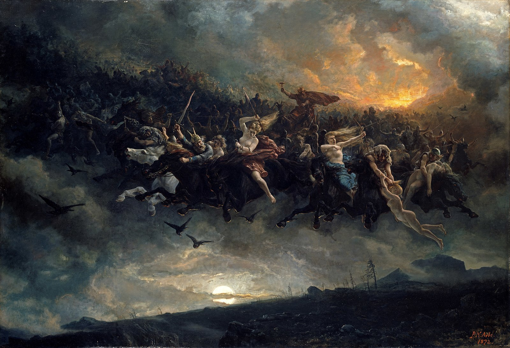

Las valquirias son figuras clave en la mitología nórdica. Son doncellas guerreras enviadas por Odín para decidir el destino de los combatientes en la batalla y llevar a los más valientes al Valhalla.
Las valquirias (Valkyrjur en nórdico antiguo) son entidades femeninas que sirven a Odín en la tarea de elegir qué guerreros caerán en combate y cuáles serán llevados al Valhalla.
Algunas valquirias tienen nombres y personalidades destacadas en las sagas nórdicas:
Las valquirias no solo eligen a los guerreros para el Valhalla, sino que también juegan un papel en el Ragnarök, el fin del mundo nórdico. En esta última batalla, lucharán junto a los Einherjar y Odín contra los gigantes y las fuerzas del caos.
Estas son las principales guerras de la mitología nórdica más conocidas de esta época:
Los Aesir son un pueblo orgulloso con una larga historia de destreza militar. Los Vanes, en cambio, son un grupo de pendencieros que siempre buscan una ventaja. Ninguno de los dos bandos puede cantar victoria en esta guerra, por lo que los Aesir y los Vanes tuvieron que intercambiar rehenes para declarar la paz. Esta guerra entre los Aesir y los Vanes se relata en el poema eddico del siglo XIII Völuspá.
La guerra del Ragnarok fue un conflicto devastador entre las fuerzas del bien y del mal. Las batallas se libraron a una escala nunca vista, y las bajas fueron elevadas. El dios Odín se enfrentó al terrible lobo Fenrir y el dios Thor tuvo que enfrentarse a la serpiente de Midgard. Pero al final, el bien triunfó sobre el mal, y la paz fue restaurada en el mundo. Gracias a los sacrificios de los valientes héroes de ambos bandos, el mundo se salvó de la destrucción total.